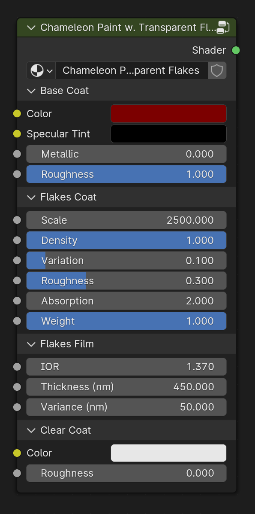

Chameleon Paint w. Transparent Flakes
Has the same three layers (base coat, flakes, and a clear top coat), where the flakes are transparent and coated with a thinfilm.
This shader was designed to simulate pearlescent mica flakes, which are commonly found in car-paint and makeup. These where historically made up of crushed up nacre (Mother of Pearl). Since the flakes are transparent, light can refract through dozens to hundreds of thinfilm layers. This results in brighter reflections, in comparison to the opaque version, and creates interesting effects when the base coat color is changed.
Inputs
Base Coat
Color
Specifies the base color of the paint.
Metallic
Controls the metallic appearance of the base paint coat.

Specular Tint
Adjusts the tint of the specular highlights.

Roughness
Controls the roughness of the base paint coat.

Flakes Coat
Scale
Adjusts the size of the flakes.
Density
Controls the density of the flakes.
Variation
This parameter determines the extent to which flake orientation deviates from the surface normal. A value of 0.0 means minimal deviation, aligning flakes closely with the surface. Higher values intensify the flake effect, making it more pronounced.
Roughness
Specifies the roughness of the flakes.
Absorption
Specifies the degree of light absorbed by the pigment before it is reflected off the flakes.
Weight
This multiplier scales the reflection intensity received by the flakes.
Flakes Film
IOR and Thickness
Variance
Controls the variance of the flake film thickness. Lower values are dull and desaturated, higher values are bright and saturated.
Clear Coat
Color
Specifies the color of the clear coat layer.
Roughness
Controls the roughness of the clear coat layer.

Outputs
Shader
Standard shader output.